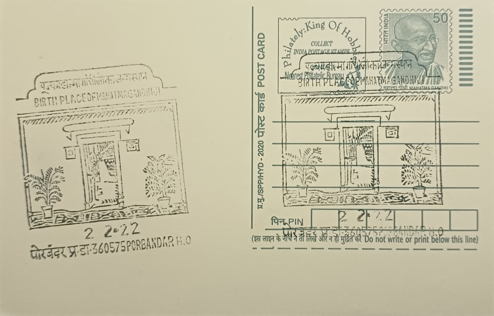
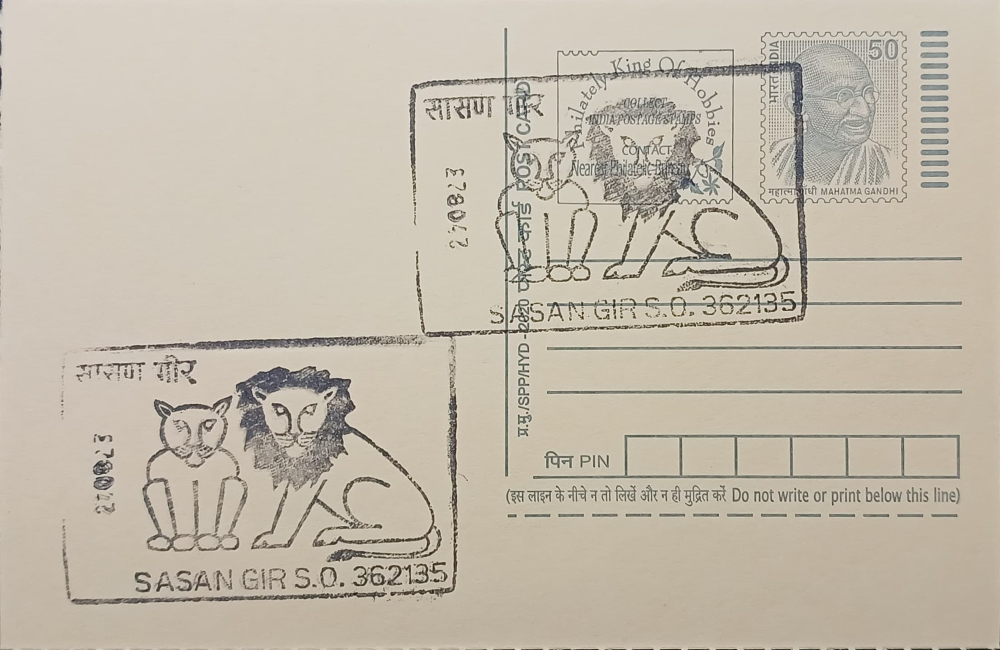
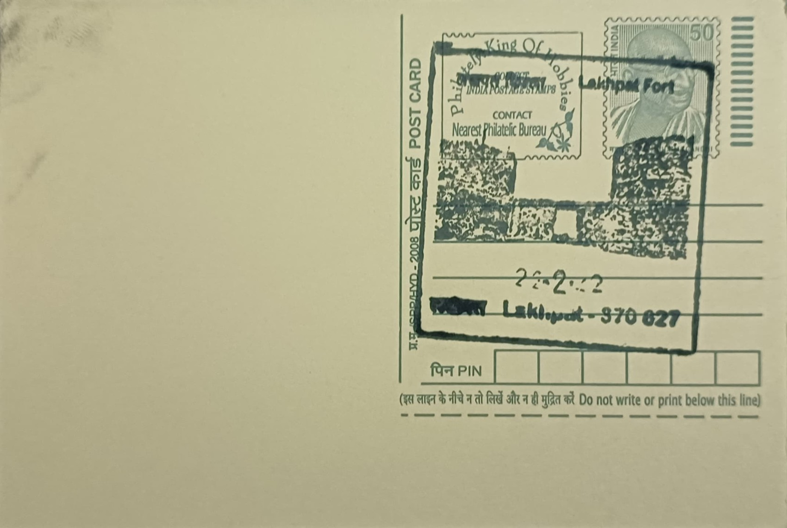
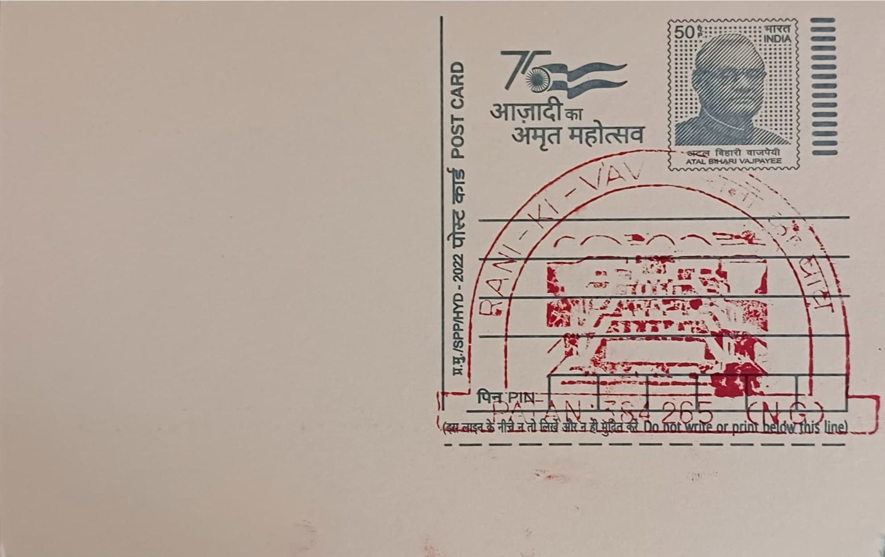

{kind=link}


{kind=link}


{kind=link}


{kind=link}


{kind=link}


This list below have 4 categories. Green represents AVAILABLE, Blue/^ represents DOUBTFUL, Orange/% represents REPLACED, and Red/* represents UNAVAILABLE.
| S. NO. | PERMANENT PICTORIAL CANCELLATION | DATE OF INTRODUCTION | POST OFFICE AND RANK | DISTRICT | STATE/UT | PINCODE | IMAGE |
|---|---|---|---|---|---|---|---|
| 1 | Alfred High School % | 02.10.1991 | Rajkot HO-PB | Rajkot | GUJARAT | 360001 | |
| 2 | Mohandas Gandhi Vidyalaya % | NA | Rajkot HO-PB | Rajkot | GUJARAT | 360001 | |
| 3 | Mahatma Gandhi Museum | 02.10.2020 | Rajkot HO-PB | Rajkot | GUJARAT | 360001 | |
| 4 | Kirti Mandir-The Birth Place of Mahatma Gandhi | 18.04.1992 | Porbandar HO | Junagadh | GUJARAT | 360575 |  |
| 5 | Arabian Sea Octopus | 02.01.2011 | Jamnagar SO | Jamnagar | GUJARAT | 361001 | |
| 6 | Arabian Sea, Bet of Dwarka | 08.04.2011 | Bet SO | Devbhoomi Dwarka | GUJARAT | 361330 | |
| 7 | Dwarkadhish Temple, Land of Sri Krishna | 16.07.1984 | Dwarka SO | Porbandar | GUJARAT | 361335 | |
| 8 | Asiatic Lions & Visit Sasan Gir Wildlife Sanctuary | 01.11.1975 | Sasan Gir SO | Bhavnagar | GUJARAT | 362135 |  |
| 9 | Sri Somnath Temple | 16.02.1977 | Prabhas Patan SO | Amreli | GUJARAT | 362268 | |
| 10 | Indian Wild Ass | 14.10.2010 | Dhrangadhra MDG-SO | Surendranagar | GUJARAT | 363310 | |
| 11 | Siddha Chakra | 03.07.1992 | Palitana SR SO | Gir Somnath | GUJARAT | 364270 | |
| 12 | Visit Flamingo City, Bird Sanctuary | 16.07.1984 | Bhuj HO | Bhavnagar | GUJARAT | 370001 | |
| 13 | Harappan Culture | 02.02.2021 | Dholavira BO | Junagadh | GUJARAT | 370165 | |
| 14 | Kachchhi Mudwork | 02.02.2021 | Khavda SO | Jamnagar | GUJARAT | 370510 | |
| 15 | Lakhpat Fort, Kachchhh | 02.02.2021 | Lakhpat BO | Rajkot | GUJARAT | 370627 |  |
| 16 | Architectural Delights Sidi Saiyad’s Window | 16.07.1984 | Ahmedabad GPO | Ahmedabad | GUJARAT | 380001 | |
| 17 | Sardar Vallabhbhai Patel National Memorial | 14.08.2006 | Shahibaug SO | Ahmedabad | GUJARAT | 380004 | |
| 18 | Kocharab Satyagraha Ashram Smarak | 30.01.1998 | Ellis Bridge SO | Ahmedabad | GUJARAT | 380006 | |
| 19 | Adalaj Stepwell * | 27.03.1986 | Navrangpura HO | Ahmedabad | GUJARAT | 380009 | |
| 20 | Sidi Saiyad’s Mosque Window | 31.03.2007 | IIM, Ahmedabad SO | Ahmedabad | GUJARAT | 380015 | |
| 21 | Spinning Wheel (Charakha) | 30.01.1995 | Gandhi Ashram SO | Ahmedabad | GUJARAT | 380027 | |
| 22 | Lothal Seal | 17.12.1997 | Lothal Bhurkhi Railway Station SO | Ahmedabad | GUJARAT | 382230 | |
| 23 | Surya Temple | 02.04.1977 | Modhera SO | Sabarkantha | GUJARAT | 384212 | |
| 24 | Rani Ki Vav (Stepwell) | 09.10.2002 | Patan (NG) SO | Sabarkantha | GUJARAT | 384265 |  |
| 25 | Birth Place of Sardar Vallabhbhai Patel | 31.10.2020 | Nadiad HO | Anand | GUJARAT | 387001 | |
| 26 | Shri Ranchhordraiji Maharaj Temple | 13.11.2022 | Dakor SO | Anand | GUJARAT | 388225 | |
| 27 | Sardar Vallabhbhai Patel | 31.10.2002 | Karamsad SO | Anand | GUJARAT | 388235 | |
| 28 | Chamar Dharini | 16.01.1989 | Vadodara HO | Vadodara | GUJARAT | 390001 | |
| 29 | Maharaja Sayajirao Gaekwad | 16.01.1989 | Vadodara Fateganj HO | Vadodara | GUJARAT | 390002 | |
| 30 | Sardar Sarovar Project and Statue of Unity | 09.10.1990 | Kevadia Colony SO | Bharuch | GUJARAT | 393151 | |
| 31 | Hajira Lighthouse | 21.09.2021 | Hajira SO | Surat | GUJARAT | 394270 | |
| 32 | Musical Instruments of Local Tribes | 27.03.1984 | Saputara SO | Navsari | GUJARAT | 397420 | |